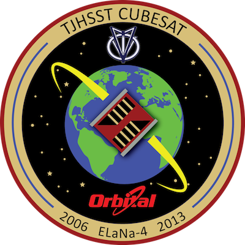

Mission Statement
TJ REVERB is a satellite built by high school students at Thomas Jefferson High School for Science and Technology, with the primary purpose to compare multiple communication methods for the purpose of education and creating a best practices document for TJ and others. Additionally, TJ REVERB will provide an educational vehicle to teach students the principles of systems engineering and have the students develop educational materials teaching concepts within science, technology, engineering and math while using the TJ REVERB CubeSat as a subject model.What is a Cubesat?
The concept started in 1999 when California Polytechnic Institute and Stanford University partnered to create the specifications for the CubeSat. It was determined that the one unit of a CubeSat equates to 10cm by 10cm by 11.35 cm in volume and usually no larger than 1.33 kilograms in mass. The initial purpose of the CubeSat program was to promote skills that were needed to send small satellites into Low Earth Orbit (LEO). Eventually, it developed to be a concept of much broader use, ranging from professional companies seeking them as modes of cheap experimentation to commercial use. Small satellites have become widely accepted as a large part of the future in space, and have found their place among much larger satellites as micro-technology has developed.Mission Objectives
The satellite’s primary purpose is to compare multiple communication methods for the purpose of education and creating a best practices document for TJ and others.Project Objectives
- Design CubeSat while staying within budget: Power, Volume, Mass, and Cost
- Assess Feasibility of CubeSat Design
- Assess Risk Factors
- Apply for and be selected as a NASA CSLI Candidate with the Education Focus Area
- Selected to recieve NASA's CSLI Grant (February 2017)
- Build, Launch, and Operate the 1U CubeSat in Orbit
Education Objectives
Inherently, the CubeSat project is an educational endeavor for TJHSST students. Students do not regularly encounter such large scale and intensive group projects in a typical classroom, so the TJ REVERB provides students the opportunity to learn how to function within subsystems and cooperate within a large team.- Train students in engineering of a CubeSat
- Develop and document the processes required
- Engage in STEM Outreach to the public and local students
- Operate the 1U CubeSat in orbit
Subsystem Objectives
TJ students who are directly involved with the design and implementation of the satellite will learn how to function in smaller groups with specific tasks known as subsystems. Together these teams will cooperate inside and outside the classroom setting for TJ REVERB.Orbit and Communciation
The Orbit/Comms subgroup is primarily responsible for evaluating and handling the communications systems on the Cubesat. The 1U CubeSat (TJREVERB) is predicated on testing the communications systems onboard. On this CubeSat, we will be testing three types of radios: one simplex UHF radio, one duplex UHF/VHF radio, and one duplex S-Band radio. The subgroup is responsible for pre-testing the radios as well.Software
The Software subgroup exists to assist all other subgroups with any software related tasks. Our responsibilities thusly include: creating a website to create awareness for TJREVERB, programming the flight computer of TJREVERB, performing TJREVERB outreach (programming focused or otherwise), and any other miscellaneous software-related tasks assigned to us by other groups.Outreach
The Outreach team is designed to bring the TJREVERB project to those outside of the team. It is part of NASA’s mission and our own. We will be performing documentation for the team, so that we have records of the decisions made and the reasoning behind them. The team’s primary goal is to organize a workshop for teams from local schools where they will build mock CubeSats and learn about our project.CAD
The CAD/Structural group will be focused more on creation of the 3U chassis (google “3U chassis cubesat” for more insight). For the 3U we will be using AutoDesk Fusion and OnShape create a computer aided design of the satellite. For this it is important to familiarize yourself with the basic commands and shortcuts of both Fusion and OnShape. As we are buying the frame for the 1U most work will start as soon as we receive the parts.Testing
The purpose of the Thermal Control and Testing team is to ensure that the CubeSat survives in the environment of space. This includes ensuring that CubeSat internal components do not freeze or overheat due to the extreme cold and high heat fluxes in a Low Earth Orbit environment. Generally, the Thermal Control and Testing team requires information pertaining to the various electronic parts within the CubeSat, including their temperature tolerances and their respective efficiencies (to estimate heat output). Material specifics (thickness, type, etc.) are also necessary, for both vibration and thermal testing. To that end, the team will occasionally make contact with the other teams to determine these characteristics. While team members need not know how to conduct every type of testing, they should have some basic knowledge of mechanics and thermal physics. Knowledge of Autodesk Fusion 360 and MATLAB is also appreciated.Electronics
The electronics subgroup of the TJ REVERB cubesat team helps test and manage the power supply, solar panels, attitude control, and overall power distribution of the Cubesat. Many of the electrical components will be donated to TJ from commercial partners. As such, a majority of the focus on the team will be connecting components and making sure that the system works correctly in an integrated manner. This will be accomplished through the development of a Helmholtz coil for testing attitude control, the construction of a clean room, and other electrical tests.Ragnarok - Key Partner

Ragnarok Industries brings a wealth of Cubesat building knowledge to the TJREVERB team. Primarily, Ragnarok aids TJREVERB by providing avionics, comprised of the flight computer and its interfaces with the various radios, sensors, and other components on board the satellite. In addition, Ragnarok has mentored the team with respect to the design of the satellite, and was represented at TJREVERB's Merit and Feasibility reviews.
Emergent - Key Partner

Emergent Space Technologies has provided mentors and guidance to TJ’s CubeSat team. They trained two TJ students in a 5-week flight dynamics internship. Under the guidance of an experienced flight dynamics engineer, Dr. Sun Hur-Diaz, and other Emergent employees, they learned how to perform flight dynamics analysis for a 1U CubeSat using NASA’s General Mission Analysis Tool (GMAT). Skills the internship developed include determining ground track and tracking periods, developing orbit dynamics models, performing orbit determination simulations, and determining mission life time. One of the TJ students, Stephanie Chen, is the current Systems Engineer and Orbit and Communications Subsystem Lead for TJ’s CubeSat team. Dr. Sun Hur-Diaz has also provided her expertise and feedback for the TJREVERB’s merit review and feasibility review which were a part of TJ’s CubeSat Launch Initiative proposal to NASA.
TJHSST
- Thomas Jefferson High School for Science and Technology is a Northern Virginia public magnet high school. The official site of TJHSST can be found here.
- In 2013, TJHSST became the first high school worldwide to succesfully launch a CubeSat into space, with the TJ3Sat project.
- 3 years later in 2016, the work on TJ's next satellite officially begun with TJ REVERB.
Project Leaders

Mike Piccione
TJ REVERB's Principal Investigator and Energy Systems Lab Director
Diana Zaveli
Project Coordinator - TJ '17
Stephanie Chen
Systems Engineer - TJ '17Subsystem Leaders

Shihao Cao
Website - TJ '19All Contributors - Click to Close
Jude Bedessem • Shihao Cao • Maxwell Lord • Kevin Zou • Daniel WuStephanie Chen
Orbit & Communciations - TJ '17
Emma Cuddy
Outreach - TJ '17
Michael Krause
Software - TJ '18
Shrikant Mishra
Electronics - TJ '17Suhas Sastry
Testing & Verification - TJ '17